Variational Gradient Matching for Dynamical Systems: Dynamic Causal Modeling
Contents
- ,
- Authors:
- Contents:
- User Input: Simulation Settings
- User Input: Estimation
- Preprocessing
- Mass Action Dynamical Systems
- Simulate Trajectories
- Prior on States and State Derivatives
- Matching Gradients
- Rewrite ODEs as Linear Combination in Parameters
- Posterior over ODE Parameters
- Rewrite Hemodynamic ODEs as Linear Combination in (monotonic functions of) Individual Hemodynamic States
- Rewrite Neuronal ODEs as Linear Combination in Individual Neuronal States
- Posterior over Individual States
- Mean-field Variational Inference
- Denoising BOLD Observations
- Fitting observations of state trajectories
- Coordinate Ascent Variational Gradient Matching
- * *
- Intercept due to Confounding Effects
- Proxy for Hemodynamic States
- Proxy for Neuronal States
- * *
- Proxy for ODE parameters
- Numerical Integration with Estimated ODE Parameters
- Time Taken
- References
,
Authors:
Nico Stephan Gorbach and Stefan Bauer, email: nico.gorbach@gmail.com
Contents:
Instructional code for the NIPS (2018) paper Scalable Variational Inference for Dynamical Systems by Nico S. Gorbach, Stefan Bauer and Joachim M. Buhmann. Please cite our paper if you use our program for a further publication. Part of the derivation below is described in Wenk et al. (2018). Example dynamical system used in this code:* Lorenz attractor* system with the* y-dimension unobserved*. The ODE parameters are also unobserved.
clear all; close all;
Warning: The file '/Applications/MATLAB_R2017a.app/toolbox/matlab/codetools/private/evalmxdom.m' could not be cleared because it contains MATLAB code that is currently executing. Warning: The file '/Users/nico/Documents/Thesis/Thesis_compact/scalable_dynamics/code_publish/dynamic_causal_modeling_m.m' could not be cleared because it contains MATLAB code that is currently executing. Warning: The file '/Applications/MATLAB_R2017a.app/toolbox/matlab/codetools/mdbpublish.m' could not be cleared because it contains MATLAB code that is currently executing. Warning: The file '/Applications/MATLAB_R2017a.app/toolbox/matlab/codetools/publish.p' could not be cleared because it contains MATLAB code that is currently executing. Warning: The file '/Applications/MATLAB_R2017a.app/toolbox/matlab/codetools/private/evalmxdom.m' could not be cleared because it contains MATLAB code that is currently executing. Warning: The file '/Users/nico/Documents/Thesis/Thesis_compact/scalable_dynamics/code_publish/dynamic_causal_modeling_m.m' could not be cleared because it contains MATLAB code that is currently executing. Warning: The file '/Applications/MATLAB_R2017a.app/toolbox/matlab/codetools/mdbpublish.m' could not be cleared because it contains MATLAB code that is currently executing. Warning: The file '/Applications/MATLAB_R2017a.app/toolbox/matlab/codetools/publish.p' could not be cleared because it contains MATLAB code that is currently executing. Warning: The file '/Applications/MATLAB_R2017a.app/toolbox/matlab/codetools/private/evalmxdom.m' could not be cleared because it contains MATLAB code that is currently executing. Warning: The file '/Users/nico/Documents/Thesis/Thesis_compact/scalable_dynamics/code_publish/dynamic_causal_modeling_m.m' could not be cleared because it contains MATLAB code that is currently executing. Warning: The file '/Applications/MATLAB_R2017a.app/toolbox/matlab/codetools/mdbpublish.m' could not be cleared because it contains MATLAB code that is currently executing. Warning: The file '/Applications/MATLAB_R2017a.app/toolbox/matlab/codetools/publish.p' could not be cleared because it contains MATLAB code that is currently executing.
User Input: Simulation Settings
- Simulation ODEs
simulation.odes = 'fwd_mod_driving';
- final time for simulation:
simulation.final_time = 359*3.22;
- observation noise:
simulation.state_obs_variance = @(x)(bsxfun(@rdivide,var(x),5));
- time interval between observations:
simulation.interval_between_observations = 0.1;
User Input: Estimation
- Candidate ODEs
candidate_odes = 'fwd_mod_driving';
- Kernel
Kernel parameters $\mathbf\phi$:
kernel.param = [10,0.2];
- Error variance on state derivatives (i.e. 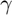*)*:
state.derivative_variance = 6.*ones(11-3,1);
- Estimation times
time.est = 0:3.22:359*3.22;
Preprocessing
[symbols,simulation,ode,odes_path,coupling_idx,opt_settings,plot_settings,state] = preprocessing_dynamic_causal_modeling (simulation,candidate_odes,state);
ODEs:
- (5*exp((17*v_1)/8))/8 - (25*exp(-q_1)*exp(f_1)*((3/5)^exp(-f_1) - 1))/16
- (5*exp((17*v_3)/8))/8 - (25*exp(-q_3)*exp(f_3)*((3/5)^exp(-f_3) - 1))/16
- (5*exp((17*v_2)/8))/8 - (25*exp(-q_2)*exp(f_2)*((3/5)^exp(-f_2) - 1))/16
(5*exp(-v_1)*exp(f_1))/8 - (5*exp((17*v_1)/8))/8
(5*exp(-v_3)*exp(f_3))/8 - (5*exp((17*v_3)/8))/8
(5*exp(-v_2)*exp(f_2))/8 - (5*exp((17*v_2)/8))/8
s_1*exp(-f_1)
s_3*exp(-f_3)
s_2*exp(-f_2)
n_1 - (3*s_1)/5 - (8*exp(f_1))/25 + 8/25
n_3 - (3*s_3)/5 - (8*exp(f_3))/25 + 8/25
n_2 - (3*s_2)/5 - (8*exp(f_2))/25 + 8/25
a_11*n_1 + a_12*n_2 + c_11*u_1
a_32*n_2 + a_33*n_3 + c_33*u_3
a_22*n_2 + a_23*n_3 + n_1*(a_21 + b_212*u_2 + b_213*u_3)
Mass Action Dynamical Systems
A deterministic dynamical system is represented by a set of 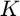 ordinary differential equations (ODEs) with model parameters 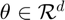 that describe the evolution of states 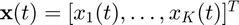 such that:
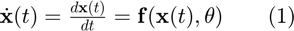,
A sequence of observations, 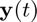, is usually contaminated by measurement error which we assume to be normally distributed with zero mean and variance for each of the states, i.e. 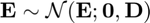, with  . For 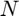 distinct time points the overall system may therefore be summarized as
. For 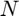 distinct time points the overall system may therefore be summarized as
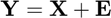,
where
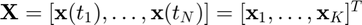,
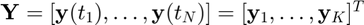,
and 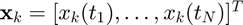 is the 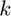'th state sequence and 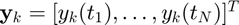 are the observations. Given the observations 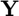 and the description of the dynamical system (1), the aim is to estimate both state variables 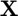 and parameters 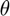.
We consider only dynamical systems that are _*locally linear _*with respect to ODE parameters and individual states 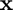. Such ODEs include mass-action kinetics and are given by:
 ,
,
with $\mathcal{M}_{ki} \subseteq \{ 1, \dots, K\}$describing the state variables in each factor of the equation (i.e. the functions are linear in parameters and contain arbitrary large products of monomials of the states).
Simulate Trajectories
non_diverging_trajectories = false; i = 0;
while ~non_diverging_trajectories
- Sample ODE parameters
non-selfinhibitory neuronal couplings (sampled uniformily in the interval [-0.8,0.8];
simulation.ode_param = -0.8 + (0.8-(-0.8)) * rand(1,length(symbols.param));
self-inhibitory neuronal couplings set to -1.
simulation.ode_param(end-2:end) = -1;
- Numerical integration
try simulation_old = simulation; [simulation,obs_to_state_relation,fig_handle,plot_handle] = simulate_state_dynamics_dcm(simulation,symbols,ode,time,plot_settings,state.ext_input,'plot'); non_diverging_trajectories = 1; end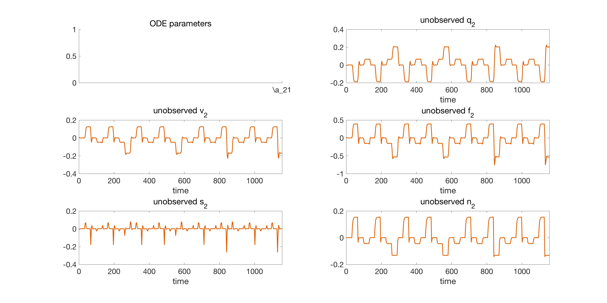
end
start timer
tic;
Prior on States and State Derivatives
Gradient matching with Gaussian processes assumes a joint Gaussian process prior on states and their derivatives:
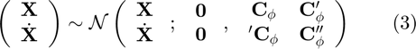,
with
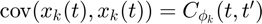,
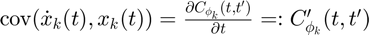,
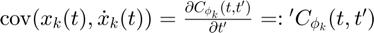,
$\mathrm{cov}(\dot{x}_k(t), \dot{x}_k(t)) = \frac{\partialC_{\mathbf\phi_k}(t,t') }{\partial t \partial t'} =: C_{\mathbf\phi_k}''(t,t')$.
Error updating Text.
Character vector must have valid interpreter syntax:
$\mathrm{cov}(\dot{x}_k(t), \dot{x}_k(t)) = \frac{\partialC_{\mathbf\phi_k}(t,t') }{\partial t \partial t'} =: C_{\mathbf\phi_k}''(t,t')$
Matching Gradients
Given the joint distribution over states and their derivatives (3) as well as the ODEs (2), we therefore have two expressions for the state derivatives:
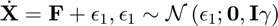,
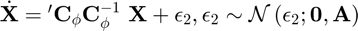,
where 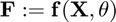 and 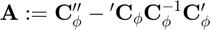 and is the error variance in the ODEs. Note that, in a deterministic system, the output of the ODEs 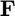 should equal the state derivatives 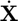. However, in the first equation above we relax this contraint by adding stochasticity to the state derivatives in order to compensate for a
potential model mismatch. The second equation above is obtained by deriving the conditional distribution for from the joint distribution in equation (3). Equating the two expressions in the equations above we can eliminate the unknown state derivatives $\dot{\mathbf{X}$:
Error updating Text.
Character vector must have valid interpreter syntax:
$\dot{\mathbf{X}$
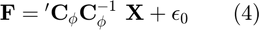,
with 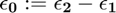.
[dC_times_invC,inv_C,A_plus_gamma_inv] = kernel_function(kernel,state,time.est);
Rewrite ODEs as Linear Combination in Parameters
Since, according to the mass action dynamics (equation 2), the ODEs are *linear in the parameters *$\mathbf\theta$ we can rewrite the ODEs in equation (2) as a linear combination in the parameters:
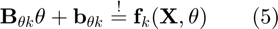,
where matrices 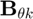 and 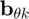 are defined such that the ODEs 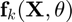 are expressed as a linear combination in .
[ode_param.lin_comb.B,ode_param.lin_comb.b] = rewrite_odes_as_linear_combination_in_parameters(ode,symbols);
Posterior over ODE Parameters
Inserting (5) into (4) and solving for $ yields:
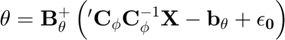,
where 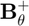 denotes the pseudo-inverse of 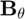. Since 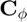$ is block diagonal we can rewrite the expression above as:
![$\mathbf{\theta} = \left( \mathbf{B}_{\mathbf{\theta}}^T \mathbf{B}_{\mathbf{\theta}} \right)^{-1} ~\mathbf{B}_{\mathbf{\theta}}^T \left( \sum_k {'\mathbf{C}_{\mathbf{\phi}_k}}\mathbf{C}_{\mathbf{\phi}_k}^{-1} \mathbf{X}_k - \mathbf{b}_{\mathbf{\theta} k} + \mathbf{\epsilon_0}^{(k)} \right)\\ ~= \left( \mathbf{B}_{\mathbf{\theta}}^T \mathbf{B}_{\mathbf{\theta}} \right)^{-1} \left(\sum_k \mathbf{B}_{\mathbf{\theta} k}^T \left( {'\mathbf{C}_{\mathbf{\phi}_k}}\mathbf{C}_{\mathbf{\phi}_k}^{-1} \mathbf{X}_k - \mathbf{b}_{\mathbf{\theta} k} +\mathbf{\epsilon_0}^{(k)} \right) \right)$](dynamic_causal_modeling_m_eq07476366998092137637.png) ,
,
where we subsitute the Moore-Penrose inverse for the pseudo-inverse (i.e. 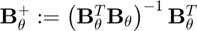). We can therefore derive the posterior distribution over ODE parameters:
$p(\mathbf{\theta} \mid \mathbf{X}, \mathbf{\phi}, \gamma) = \mathcal{N}\left(\mathbf{\theta} ; \left( \mathbf{B}_{\mathbf{\theta}}^T\mathbf{B}_{\mathbf{\theta}} \right)^{-1} \left( \sum_k \mathbf{B}_{\mathbf{\theta} k}^T ~\left( {'\mathbf{C}_{\mathbf{\phi} k}} \mathbf{C}_{\mathbf{\phi} k}^{-1} \mathbf{X}_k -\mathbf{b}_{\mathbf{\theta} k} \right) \right), ~ \mathbf{B}_{\mathbf{\theta}}^+ ~(\mathbf{A} + \mathbf{I}\gamma) ~ \mathbf{B}_{\mathbf{\theta}}^{+T} \qquad (6)$.
Error updating Text.
Character vector must have valid interpreter syntax:
$p(\mathbf{\theta} \mid \mathbf{X}, \mathbf{\phi}, \gamma) = \mathcal{N}\left(\mathbf{\theta} ; \left( \mathbf{B}_{\mathbf{\theta}}^T\mathbf{B}_{\mathbf{\theta}} \right)^{-1} \left( \sum_k \mathbf{B}_{\mathbf{\theta} k}^T ~\left( {'\mathbf{C}_{\mathbf{\phi} k}} \mathbf{C}_{\mathbf{\phi} k}^{-1} \mathbf{X}_k -\mathbf{b}_{\mathbf{\theta} k} \right) \right), ~ \mathbf{B}_{\mathbf{\theta}}^+ ~(\mathbf{A} + \mathbf{I}\gamma) ~ \mathbf{B}_{\mathbf{\theta}}^{+T} \qquad (6)$
Rewrite Hemodynamic ODEs as Linear Combination in (monotonic functions of) Individual Hemodynamic States
- *Deoxyhemoglobin content *
Rewrite the BOLD signal change equation as a linear combination
in a monotonic function of the deoxyhemoglobin content $$\exp(\mathbf{q})$$: $$\mathbf{R}_{q~\mathbf\lambda} ~ \exp(\mathbf{q}) ~+ ~
\mathbf{r}_{v~\mathbf\lambda} \stackrel{!}{=} ~\mathbf\lambda(\mathbf{q},\mathbf{v})$$.[state.deoxyhemo.R,state.deoxyhemo.r] = rewrite_bold_signal_eqn_as_linear_combination_in_deoxyhemo(symbols);
- Blood volume
Rewrite the deoxyhemoglobin content ODE as a linear combination
in a monotonic function of the blood volume $\exp\left( 17 / 8 ~\mathbf{v}\right)$: $\mathbf{R}_{v\dot{q}} ~\exp\left( 17 / 8 ~\mathbf{v}\right)
~+~ \mathbf{r}_{v\dot{q}} \stackrel{!}{=} \mathbf{f}_{\dot{q}}(\mathbf{X},\mathbf\theta)$.[state.vol.R,state.vol.r] = rewrite_deoxyhemo_ODE_as_linear_combination_in_vol(ode,symbols);
- Blood flow
Rewrite the blood volume ODE as a linear combination in
a monotonic function of the blood flow $\exp(\mathbf{f})$. $$\mathbf{R}_{f~\dot{v}} ~ \exp(\mathbf{f}) + \mathbf{r}_{f~\dot{v}}
\stackrel{!}{=} \mathbf{f}_{\dot{v}}(\mathbf{X},\mathbf\theta)$$.[state.flow.R,state.flow.r] = rewrite_vol_ODE_as_linear_combination_in_flow(ode,symbols);
- Vasosignalling
Rewrite the blood flow and vasoginalling ODEs as a linear
combination in vasosignalling $\mathbf{s}$. $$\mathbf{R}_{s\dot{f}} ~\mathbf{s} + \mathbf{r}_{s\dot{f}}
\stackrel{!}{=} \mathbf{f}_{\dot{f}}(\mathbf{X},\mathbf\theta)$$. $$\mathbf{R}_{s\dot{s}}~ \mathbf{s} + \mathbf{r}_{s\dot{s}}
\stackrel{!}{=} \mathbf{f}_{\dot{s}}(\mathbf{X},\mathbf\theta)$$.[state.vaso.R,state.vaso.r] = rewrite_vaso_and_flow_odes_as_linear_combination_in_vaso(ode,symbols);
Rewrite Neuronal ODEs as Linear Combination in Individual Neuronal States
We rewrite the ODE(s) $ as a linear combination in the individual state 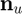$:
$$\mathbf{R}_{uk} \mathbf{n}_u + \mathbf{r}_{uk} \stackrel{!}{=}
\mathbf{f}_{k}(\mathbf{X},\mathbf\theta)$$,where matrices 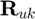$ and 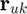 are defined such that the ODE $ is expressed as a linear combination in the individual state $.
[state.neuronal.R,state.neuronal.r] = rewrite_odes_as_linear_combination_in_ind_neuronal_states(ode,symbols,coupling_idx.states);
Posterior over Individual States
Given the linear combination of the ODEs w.r.t. an individual state, we define the matrices 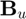 and 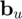 such that the expression 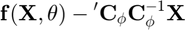$ is rewritten as a linear combination in an individual state 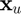:
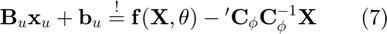.
Inserting (7) into (4) and solving for $ yields:
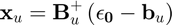$,
where 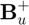$ denotes the pseudo-inverse of $. Since $ is block diagonal we can rewrite the expression above as:
,
where we subsitute the Moore-Penrose inverse for the pseudo-inverse (i.e. ). We can therefore derive the posterior distribution over an individual state $:
,
with $ denoting the set of all states except state $.
Mean-field Variational Inference
To infer the parameters $, we want to find the maximum a posteriori estimate (MAP):
 .
.
However, the integral above is intractable due to the strong couplings induced by the nonlinear ODEs $ which appear in the term $.
We use mean-field variational inference to establish variational lower bounds that are analytically tractable by decoupling state variables from the ODE parameters as well as decoupling the state variables from each other. Note that, since the ODEs described by equation (2) are *locally linear*, both conditional distributions $ (equation (6)) and  $ (equation (8)) are analytically tractable and Gaussian distributed as mentioned previously. The decoupling is induced by designing a variational distribution $ which is restricted to the family of factorial distributions:
$ (equation (8)) are analytically tractable and Gaussian distributed as mentioned previously. The decoupling is induced by designing a variational distribution $ which is restricted to the family of factorial distributions:
 $.
$.
The particular form of $ and $ are designed to be Gaussian distributed which places them in the same family as the true full conditional distributions. To find the optimal factorial distribution we minimize the Kullback-Leibler divergence between the variational and the true posterior distribution:
$,
where $ is the proxy distribution. The proxy distribution that minimizes the KL-divergence (10) depends on the true full conditionals and is given by:
.
Denoising BOLD Observations
We denoise the BOLD observation by standard GP regression.
bold_response.denoised_obs = denoising_BOLD_observations(simulation.bold_response{:,{'n_1','n_3','n_2'}},inv_C,symbols,simulation);
Fitting observations of state trajectories
We fit the observations of state trajectories by standard GP regression. The data-informed distribution$ $ in euqation (9) can be determined analytically using Gaussian process regression with the GP prior $:
$,
where $ and $.
[mu,inv_sigma] = fitting_state_observations(inv_C,obs_to_state_relation,simulation,symbols);
Coordinate Ascent Variational Gradient Matching
We minimize the KL-divergence in equation (10) by coordinate descent (where each step is analytically tractable) by iterating between determining the proxy for the distribution over ODE parameters $ and the proxies for the distribution over individual states $.
- Initialize the state estimation by the GP regression posterior
state.proxy.mean = array2table([time.est',mu],'VariableNames',['time',symbols.state_string]); bold_response.obs_old = bold_response.denoised_obs; ode_param.proxy.mean = zeros(length(symbols.param),1);
- Coordinate ascent
for i = 1:opt_settings.coord_ascent_numb_iter
* *
Intercept due to Confounding Effects
The intercept is determined by a minimum least squares estimator:
.
bold_response_signal_change = bold_signal_change_eqn(state.proxy.mean{:,'v_1','v_2','v_3'},...
state.proxy.mean{:,'q_1','q_2','q_3'});
bold_response.confounding_effects.intercept = determine_intercept(bold_response.obs_old-bold_response_signal_change,...
bold_response.confounding_effects.X0,bold_response.confounding_effects.X0_penrose_inv); bold_response.confounding_effects.intercept = zeros(height(simulation.bold_response),width(simulation.bold_response)-1);
bold_response.denoised_obs = bold_response.obs_old - bold_response.confounding_effects.intercept;
Proxy for Hemodynamic States
Determine the proxies for the states, starting with deoxyhemoglobin followed by blood volume, blood flow and finally vasosignalling. The information flow in the hemodynamic system is shown in its factor graph below:
.
The model inversion in the hemodynmic factor graph above occurs locally w.r.t. individual states. Given the expression for the BOLD signal change equation, we invert the BOLD signal change equation analytically to determine the deoxyhemoglobin content $ (1). The newly inferred deoxyhemoglobin content $ influences the expression for the factor associated with the change in deoxyhemoglobin content $, which we subsequently invert analytically to infer the blood volume (2). Thereafter, we infer the blood flow $ (3) by inverting the factors associated with the change in blood volume $ as well as vasosignalling $, followed by inferring vasosignalling  $ (4) by inverting the factors associated with blood flow induction $ and vasosignalling $. Finally, the neuronal dynamics (5) are learned, in part, by inverting the factor associated with vasosignalling $. The typical trajectories of each of the states are shown (red) together with their iterative approximation (grey lines) obtained by graphical DCM.
$ (4) by inverting the factors associated with blood flow induction $ and vasosignalling $. Finally, the neuronal dynamics (5) are learned, in part, by inverting the factor associated with vasosignalling $. The typical trajectories of each of the states are shown (red) together with their iterative approximation (grey lines) obtained by graphical DCM.
- Proxy for deoxyhemolgobin content
Damping is required since we invert only the factor for
the BOLD signal change equation w.r.t. a monotonic function of deoxyhemoglobin
content $\exp( \mathbf{q})$.* Undamped proxy:*
state_proxy_undamped = proxy_for_deoxyhemoglobin_content(state.deoxyhemo,state.proxy.mean{:,symbols.state_string},...
bold_response.denoised_obs,symbols,A_plus_gamma_inv,opt_settings);
* Damped proxy:*
state.proxy.mean{:,{'q_1','q_3','q_2'}} = (1-opt_settings.damping) * state.proxy.mean{:,{'q_1','q_3','q_2'}} + ...
opt_settings.damping * state_proxy_undamped;
- Proxy for blood volume
- * Damping is required since we invert only the a subset of ODEs w.r.t. a monotonic function of blood volume .
- Undamped proxy:*
state_proxy_undamped = proxy_for_blood_volume(state.vol,dC_times_invC,state.proxy.mean{:,symbols.state_string},...
ode_param.proxy.mean,symbols,A_plus_gamma_inv,opt_settings);
*Damped proxy:*
state.proxy.mean{:,{'v_1','v_3','v_2'}} = (1-opt_settings.damping) * state.proxy.mean{:,{'v_1','v_3','v_2'}} + ...
opt_settings.damping * state_proxy_undamped;
- Proxy for blood flow
Damping is required since we invert only the a subset of
ODEs w.r.t. a mononic function of blood flow $\exp(\mathbf{f})$.*Undamped proxy:*
state_proxy_undamped = proxy_for_blood_flow(state.flow,dC_times_invC,state.proxy.mean{:,symbols.state_string},...
ode_param.proxy.mean,symbols,A_plus_gamma_inv,opt_settings);
*Damped proxy:*
state.proxy.mean{:,{'f_1','f_3','f_2'}} = (1-opt_settings.damping) * state.proxy.mean{:,{'f_1','f_3','f_2'}} + ...
opt_settings.damping * state_proxy_undamped;
- Proxy for vasosignalling
No damping is required because we invert all ODEs w.r.t.
vasosingalling $\mathbf{s}$. state.proxy.mean{:,{'s_1','s_3','s_2'}} = proxy_for_vasosignalling(state.vaso,dC_times_invC,...
state.proxy.mean{:,symbols.state_string},ode_param.proxy.mean,symbols,A_plus_gamma_inv,opt_settings);
Proxy for Neuronal States
- *Determine the proxies for the neuronal states. An example of the information flow in the neuronal part of the nonlinear forward modulating (nonlin_fwd_mod) is shown in its factor graph below:
.
In the neuronal factor graph (for the nonlinear forwad modulation) above each individual state appears linear in every factor in the neuronal model. We can therefore analytically invert every factor to determine the neuronal state. The typical trajectories of each of the states are shown (red) together with their iterative approximation (grey lines) obtained by variational gradient matching.
No damping is required because we invert all ODEs w.r.t. neuronal populations .
state.proxy.mean{:,{'n_1','n_3','n_2'}} = proxy_for_neuronal_populations(state.neuronal,...
state.proxy.mean{:,symbols.state_string},ode_param.proxy.mean',dC_times_invC,...
coupling_idx.states,symbols,A_plus_gamma_inv,opt_settings);
Keep initial value at zero
state_idx = cellfun(@(x) ~strcmp(x(1),'u'),symbols.state_string);
state.proxy.mean{1,state_idx} = bsxfun(@minus,state.proxy.mean{1,state_idx},state.proxy.mean{1,state_idx});
* *
Proxy for ODE parameters
Expanding the proxy distribution in equation (11) for
$$\mathbf{\theta}$$ yields: $\hat{q}(\mathbf{\mathbf\theta}) \propto \exp
\left( ~E_{Q_{-\mathbf\theta}} \ln p(\theta \mid \mathbf{X},\mathbf{Y},\mathbf\phi,\gamma,\mathbf\sigma)
~ \right) \\ \qquad= \exp \left( ~E_{Q_{-\mathbf{\theta}}} \ln \mathcal{N}\left(\mathbf{\theta}
; \left( \mathbf{B}_{\mathbf{\theta}}^T \mathbf{B}_{\mathbf{\theta}} \right)^{-1}
\left( \sum_k \mathbf{B}_{\mathbf{\theta} k}^T ~ \left( {'\mathbf{C}_{\mathbf{\phi}
k}} \mathbf{C}_{\mathbf{\phi} k}^{-1} \mathbf{X}_k - \mathbf{b}_{\mathbf{\theta}
k} \right) \right), ~ \mathbf{B}_{\mathbf{\theta}}^+ ~ (\mathbf{A} + \mathbf{I}\gamma)
~ \mathbf{B}_{\mathbf{\theta}}^{+T} \right) ~\right)$, where we substitute $$p(\mathbf{\theta} \mid \mathbf{X},\mathbf{\phi},\gamma)$$
with its density given in equation (6). No damping is required because we invert all ODEs w.r.t.
neuronal couplings $\mathbf{\theta}$.if i>200 || i==opt_settings.coord_ascent_numb_iter [ode_param.proxy.mean,ode_param.proxy.inv_cov] = proxy_for_ode_parameters(... state.proxy.mean{:,symbols.state_string},dC_times_invC,ode_param.lin_comb,... symbols,A_plus_gamma_inv,opt_settings); end
if i==1 || ~mod(i,20) plot_results(fig_handle,state,simulation,ode_param.proxy.mean,plot_handle,symbols,plot_settings,'not_final'); end

end
Numerical Integration with Estimated ODE Parameters
See whether we actually fit the BOLD responses well. Curves are shown in black.
simulation2 = simulation_old; simulation2.ode_param = ode_param.proxy.mean'; [simulation2,obs_to_state_relation] = simulate_state_dynamics_dcm(simulation2,symbols,ode,time,... plot_settings,state.ext_input,'no plot'); state.proxy.num_int = simulation2.state;
- Final result
plot_results(fig_handle,state,simulation,ode_param.proxy.mean,plot_handle,symbols,plot_settings,'final');
Time Taken
disp(['time taken: ' num2str(toc) ' seconds'])
time taken: 80.5108 seconds
References
*Gorbach, N.S. , Bauer, S. *and Buhmann, J.M., Scalable Variational Inference for Dynamical Systems. 2017a. Neural Information Processing Systems (NIPS). Link to NIPS paper here and arxiv paper here.
Bauer, S. , Gorbach, N.S. and Buhmann, J.M., Efficient and Flexible Inference for Stochastic Differential Equations. 2017b. Neural Information Processing Systems (NIPS). Link to NIPS paper here.
Wenk, P., Gotovos, A., Bauer, S., Gorbach, N.S., Krause, A. and Buhmann, J.M., Fast Gaussian Process Based Gradient Matching for Parameters Identification in Systems of Nonlinear ODEs. 2018. In submission to Conference on Uncertainty in Artificial Intelligence (UAI). Link to arxiv paper here.
Calderhead, B., Girolami, M. and Lawrence. N.D., 2002. Accelerating Bayesian inference over nonlinear differential equation models. In Advances in Neural Information Processing Systems (NIPS) . 22.
The authors in bold font have contributed equally to their respective papers.